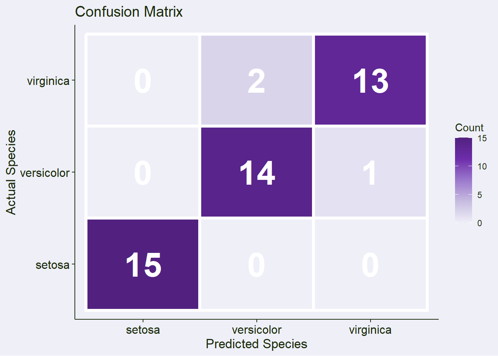
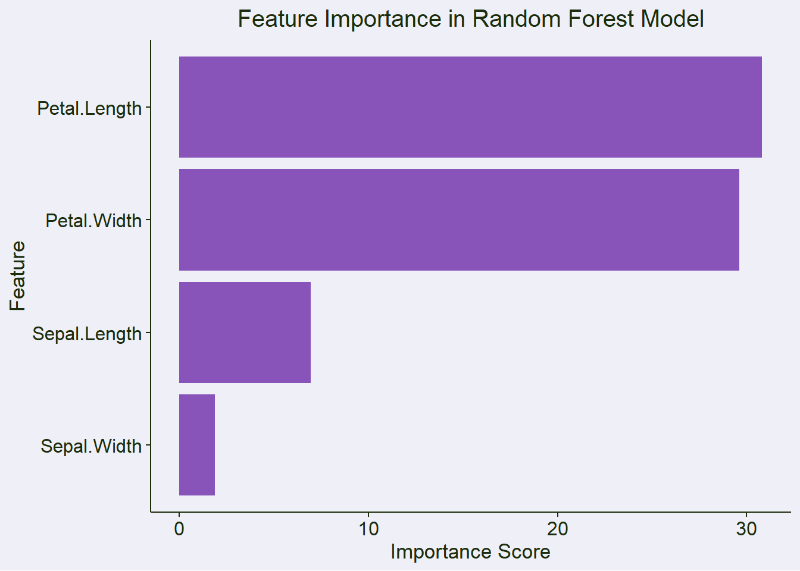
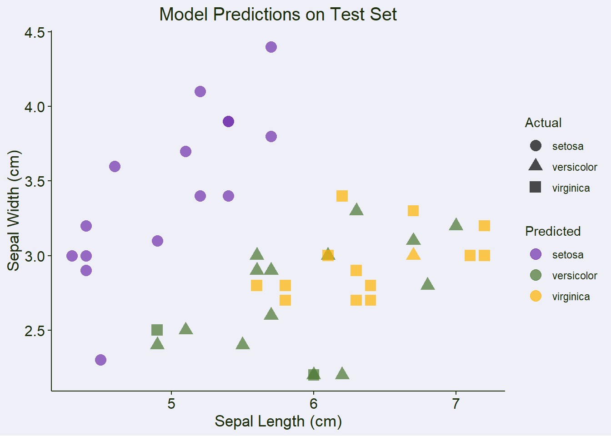

library(randomForest)
library(caret)
library(ggplot2)
library(dplyr)
library(tidyr)
library(gt)
# NEW
library(quarto)
library(brand.yml)Predicting Iris Species with ML
Load Packages
We begin by loading all the required packages for ML and visualization.
Code
plot_theme <- theme_brand_ggplot2("_brand.yml")
table_theme <- quarto::theme_brand_gt("_brand.yml")
color_palette <- list(
discrete1 = c("#6E2DAB", "#49752E", "#FFB300", "#D7263D", "#008B8B"),
discrete2 = c("#9B79CD", "#2F4F4F", "#B0C4DE", "#DAA520", "#A52A2A"),
sequential1 = c("#EFEFF8", "#C7BDE0", "#9B79CD", "#6E2DAB", "#522180"),
sequential2 = c("#EBF5E7", "#B8D3A8", "#82B471", "#49752E", "#30511F"),
sequential3 = c("#FFF8E1", "#FFDDA1", "#FFB300", "#CC8C00", "#996600"),
diverging1 = c("#A50F15", "#D7263D", "#F49C8F", "#FDF7EC", "#A5D6A7", "#49752E","#284A1A"),
diverging2 = c("#522180", "#6E2DAB", "#B6A0D9", "#FDF7EC", "#FFDDA1", "#FFB300","#CC8C00"))
theme_set(plot_theme + theme(
plot.title = element_text(size = 15),
axis.text = element_text(size = 12),
axis.title = element_text(size = 13)
))Load Data
The next step is to load the iris dataset:
data(iris)
iris |>
head() |>
gt() |>
tab_header(title = "Iris Flowers") |>
table_theme()| Iris Flowers | ||||
| Sepal.Length | Sepal.Width | Petal.Length | Petal.Width | Species |
|---|---|---|---|---|
| 5.1 | 3.5 | 1.4 | 0.2 | setosa |
| 4.9 | 3.0 | 1.4 | 0.2 | setosa |
| 4.7 | 3.2 | 1.3 | 0.2 | setosa |
| 4.6 | 3.1 | 1.5 | 0.2 | setosa |
| 5.0 | 3.6 | 1.4 | 0.2 | setosa |
| 5.4 | 3.9 | 1.7 | 0.4 | setosa |
Create feature matrix and target vector
X <- iris[, 1:4]
y <- iris$SpeciesSplit the data (70% train, 30% test)
set.seed(42)
train_index <- createDataPartition(y, p = 0.7, list = FALSE)
X_train <- X[train_index, ]
X_test <- X[-train_index, ]
y_train <- y[train_index]
y_test <- y[-train_index]Standardize features
# Calculate mean and sd manually for each column
scaling_params <- data.frame(
feature = colnames(X_train),
mean = apply(X_train, 2, mean),
sd = apply(X_train, 2, sd)
)
# Display scaling parameters
scaling_params |>
gt() |>
tab_header(title = "Scaling Parameters") |>
fmt_number(columns = c(mean, sd), decimals = 4) |>
table_theme()| Scaling Parameters | ||
| feature | mean | sd |
|---|---|---|
| Sepal.Length | 5.8857 | 0.8380 |
| Sepal.Width | 3.0705 | 0.4036 |
| Petal.Length | 3.8133 | 1.7924 |
| Petal.Width | 1.2162 | 0.7796 |
# Apply scaling
X_train_scaled <- scale(X_train, center = scaling_params$mean, scale = scaling_params$sd)
X_test_scaled <- scale(X_test, center = scaling_params$mean, scale = scaling_params$sd)Train a Random Forest classifier
set.seed(42)
model <- randomForest(x = X_train_scaled,
y = y_train,
ntree = 100,
importance = TRUE)Make predictions
y_pred <- predict(model, X_test_scaled)Evaluate the model
accuracy <- sum(y_pred == y_test) / length(y_test)
cat("Model Accuracy:", sprintf("%.2f%%", accuracy * 100), "\n")Model Accuracy: 93.33% Classification Report
cat("Classification Report:\n")Classification Report:conf_matrix <- confusionMatrix(y_pred, y_test)
conf_matrix Confusion Matrix and Statistics
Reference
Prediction setosa versicolor virginica
setosa 15 0 0
versicolor 0 14 2
virginica 0 1 13
Overall Statistics
Accuracy : 0.9333
95% CI : (0.8173, 0.986)
No Information Rate : 0.3333
P-Value [Acc > NIR] : < 2.2e-16
Kappa : 0.9
Mcnemar's Test P-Value : NA
Statistics by Class:
Class: setosa Class: versicolor Class: virginica
Sensitivity 1.0000 0.9333 0.8667
Specificity 1.0000 0.9333 0.9667
Pos Pred Value 1.0000 0.8750 0.9286
Neg Pred Value 1.0000 0.9655 0.9355
Prevalence 0.3333 0.3333 0.3333
Detection Rate 0.3333 0.3111 0.2889
Detection Prevalence 0.3333 0.3556 0.3111
Balanced Accuracy 1.0000 0.9333 0.9167Confusion Matrix for Plotting
cm <- table(Actual = y_test, Predicted = y_pred)
cm_df <- as.data.frame(cm)Plot 1: Confusion Matrix
confusion_plot <- ggplot(cm_df, aes(x = Predicted, y = Actual, fill = Freq)) +
geom_tile(color = "white", linewidth = 1.5) +
geom_text(aes(label = Freq), color = "white", size = 12, fontface = "bold") +
labs(title = "Confusion Matrix",
x = "Predicted Species",
y = "Actual Species",
fill = "Count") +
scale_fill_gradientn(colors = color_palette$sequential1) # NEW
confusion_plot
Feature importance
feature_importance <- data.frame(
feature = rownames(importance(model)),
importance = importance(model)[, "MeanDecreaseGini"]
) %>%
arrange(desc(importance))
feature_importance |>
gt() |>
tab_header(title = "Feature Importance") |>
fmt_number(columns = importance, decimals = 4) |>
table_theme()| Feature Importance | |
| feature | importance |
|---|---|
| Petal.Length | 30.8052 |
| Petal.Width | 29.6161 |
| Sepal.Length | 6.9387 |
| Sepal.Width | 1.8772 |
Plot 2: Feature Importance
importance_plot <- ggplot(feature_importance,
aes(x = reorder(feature, importance), y = importance)) +
geom_col(alpha = 0.8, fill = color_palette$discrete1[1]) +
coord_flip() +
labs(title = "Feature Importance in Random Forest Model",
x = "Feature",
y = "Importance Score") +
theme(plot.title = element_text(hjust = 0.5))
importance_plot
Create predictions DataFrame for visualization
test_results <- as.data.frame(X_test)
colnames(test_results) <- colnames(X)
test_results$actual <- y_test
test_results$predicted <- y_pred
test_results$correct <- test_results$actual == test_results$predictedPlot 3: Prediction Results (using first two features)
prediction_plot <- ggplot(test_results,
aes(x = Sepal.Length, y = Sepal.Width,
color = predicted, shape = actual)) +
scale_color_manual(values = color_palette$discrete1) +
geom_point(size = 4, alpha = 0.7) +
labs(title = "Model Predictions on Test Set",
x = "Sepal Length (cm)",
y = "Sepal Width (cm)",
color = "Predicted",
shape = "Actual") +
theme(plot.title = element_text(hjust = 0.5))
prediction_plot
Save the model and preprocessing parameters to disk
saveRDS(model, "iris_rf_model.rds")
saveRDS(scaling_params, "iris_scaler.rds")